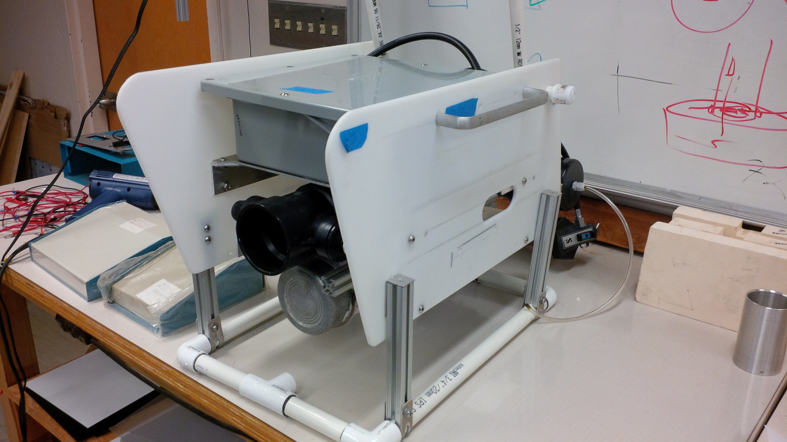
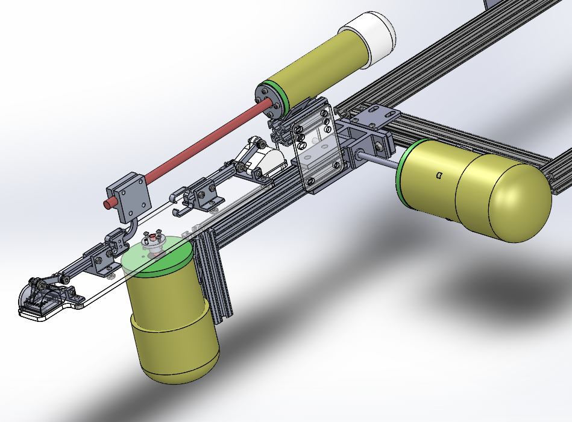
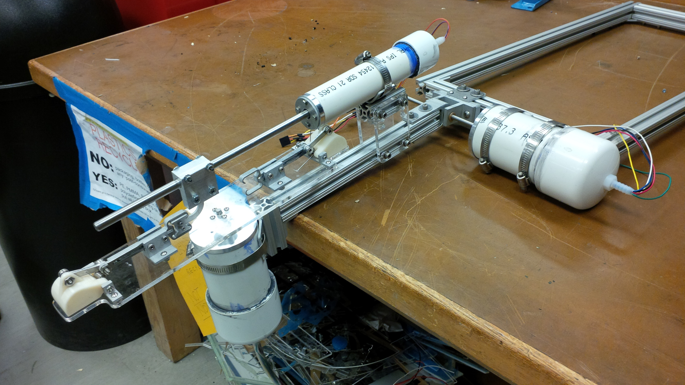

A past co-worker and mentor asked me to modify his Remotely Operated Vehicle (ROV) to improve on its glass sea sponge research capabilities. I formed a team with three of my fellow engineering students to design and prototype a system to capture small samples of sponge tissue at depths up to 1000 ft (300 m).
The ROV was designed and built by previous student teams working with our client. It’s a very clever system that employs pressure compensation to avoid many of the challenges that manifest when working in deep water. The metal cylinder in the middle of the craft holds compressed air, and is connected to a regulator – the same set-up a diver would use. As the ROV descends the regulator equalizes the pressure between the enclosed spaces (eg the ROV electronics box, the camera) and the surrounding water by releasing air into the enclosure. As it ascends, the regulator “breathes out”, expelling the excess air into the ocean to maintain pressure equilibrium.
For us this meant we only needed basic water-tight enclosures, as we could use the existing pressure-regulating infrastructure to keep our electronics and motor enclosures at the same pressure as the environment.

Our prototype consisted of two rotary motors and one linear actuator, each hooked up to a BeagleBone controller and held in individual waterproof enclosures made out of PVC pipe. Two samples could be retrieved per dive.
- Two sets of grippers are mounted on a clear plexiglass carousel. One is easily visible at the very left of the image below – the 3D printed cup shears off the tissue sample against an inset punch. The grippers are held closed by a torsional spring, and are opened by pulling on a rod connected to the cup.
- Once the first gripper has secured a sample the leftmost motor rotates the carousel 180 degrees, moving the unused gripper into the “ready” position.
- The middle enclosure holds the linear actuator. When a gripper rotates into position its rod slots into a connector attached to the linear actuator such that retracting the actuator opens the gripper.
- The rightmost motor controls the pitch of the assembly, to give the operator more control when going for a sample and to stow the system against the ROV when not in use.

